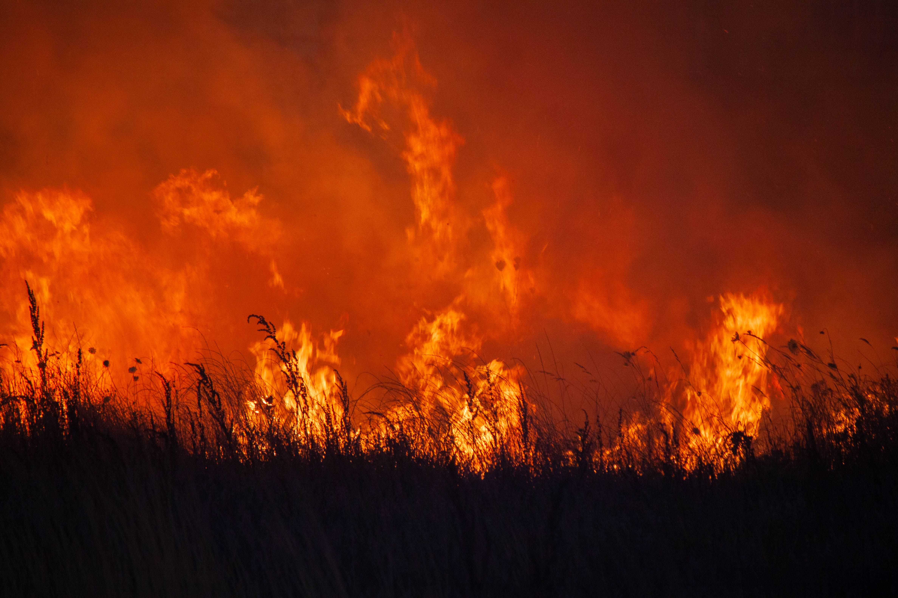

Best Eats
The Sicilian Cafe
The Sicilian Cafe is an upscale restaurant that serves authentic Italian. The Arancini is a must-try item.
Big Tuna
Big Tuna offers affordable and delicious Japanese food. They have a great selection of sushi and sashimi.
Provisions
Provisions is a local pub-style restaurant with your favorite staples. Their back patio dining area is a quiet and peaceful spot to enjoy your meal.
Hot Spots
Stay Informed
Watch Duty

Butte County is fairly prone to wildfires. Stay up-to-date on all local fires and evacuation notices. Watch Duty has an app that is downloadable by phone and can provide notifications when a fire appears near you. Watch Duty is also accessible by their website.
Explore Butte County

Connect with the local community on the Explore Butte County website. They regularly promote community events, local food spots, outdoor activities, and more!